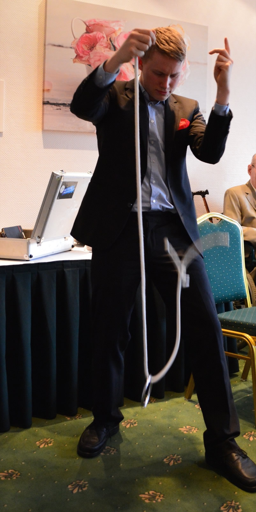
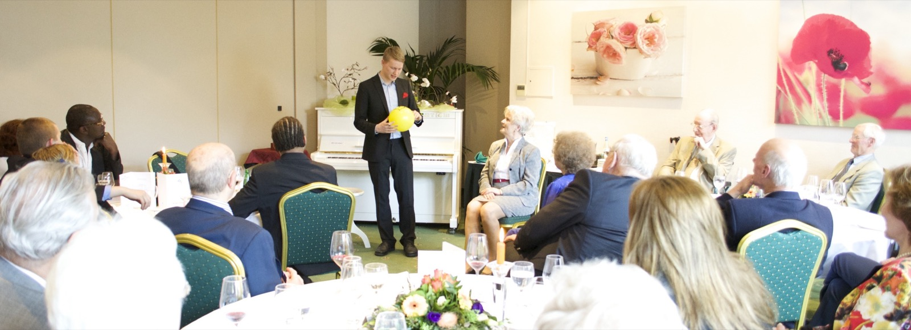
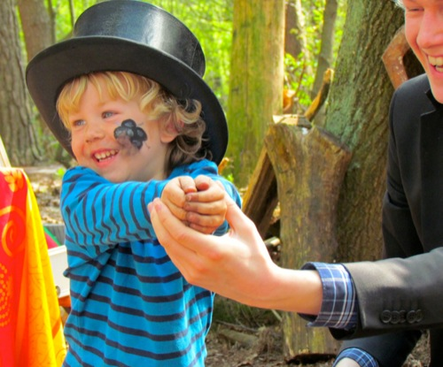
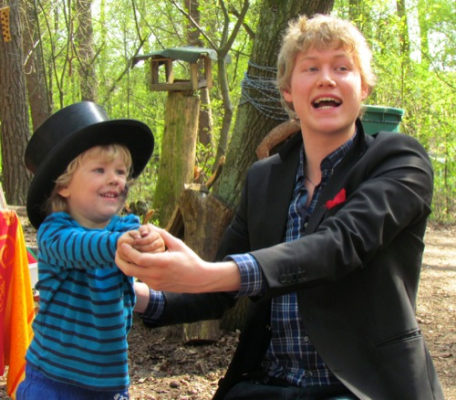
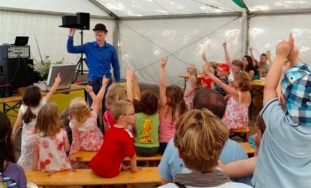
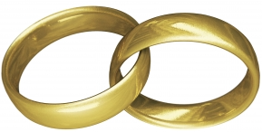

Repertoire
Bühnenshow / Stand Up Bei der Bühnenshow steht der Humor an erster Stelle. ZauberJanis macht Ihre Veranstaltung durch die rege Zuschauerbeteiligung zu einem unvergesslichen Event, an das sich jeder lange mit einem Schmunzeln erinnern wird. Ob Gedankenlesen, virtuose Kunststücke oder Comedy: für jeden ist etwas dabei, auf das er sich freuen kann. |
 | |
|
Close Up / am Tisch "... das hätte ich gerne mal aus der Nähe gesehen!" |
| |
 |
Kindershows Ob auf Kindergeburtstagen, Kinderfesten oder in Betreuungseinrichtungen für Kinder: Die Magie sorgt immer für strahlende Gesichter, Spannung und Spaß. Im Rahmen des Kinderprogramms steht weniger der Künstler im Mittelpunkt als das Kind selbst. Durch das Prinzip der "Mitmachshow" werden alle Kinder in das Bühnengeschehen integriert und werden selbst zu kleinen Zauberern. |
  | |
|  |
Special Events Die Show kann auf Wunsch beispielsweise für Hochzeit, Weihnachten oder andere Mottos angepasst werde
|
|||
|
Hochzeit |
 | |
|
Weihnachten |
||